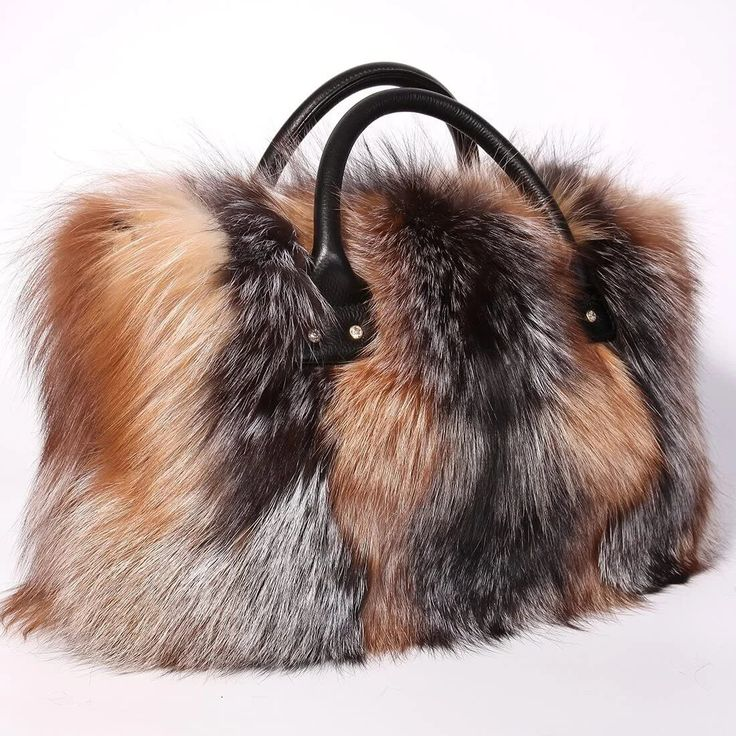

FUTRAK narodził się z głębokiej miłości do polskiego rzemiosła i wielowiekowej tradycji krawiectwa. Nasza marka powstała z przekonania, że prawdziwy luksus tkwi w jakości materiałów i dbałości o każdy detal.
"Każde futro to dzieło sztuki —
stworzone, by trwać pokolenia."
Wybieramy wyłącznie materiały najwyższej klasy, poddawane rygorystycznej selekcji przez naszych ekspertów. Każdy produkt FUTRAK przechodzi przez ręce polskich mistrzów rzemiosła, którzy od pokoleń przekazują swoje umiejętności.
Polska od wieków słynie z wyjątkowej kultury futrzarskiej. FUTRAK kontynuuje tę dumną tradycję, łącząc klasyczne rzemiosło z nowoczesną elegancją. Nasze kolekcje inspirowane są surowością polskich zim i majestatem natury.
Wierzymy, że prawdziwy luksus to nie tylko wygląd — to uczucie, które towarzyszy Ci każdego dnia. Nasze futra chronią przed zimnem, jednocześnie podkreślając Twój niepowtarzalny styl.